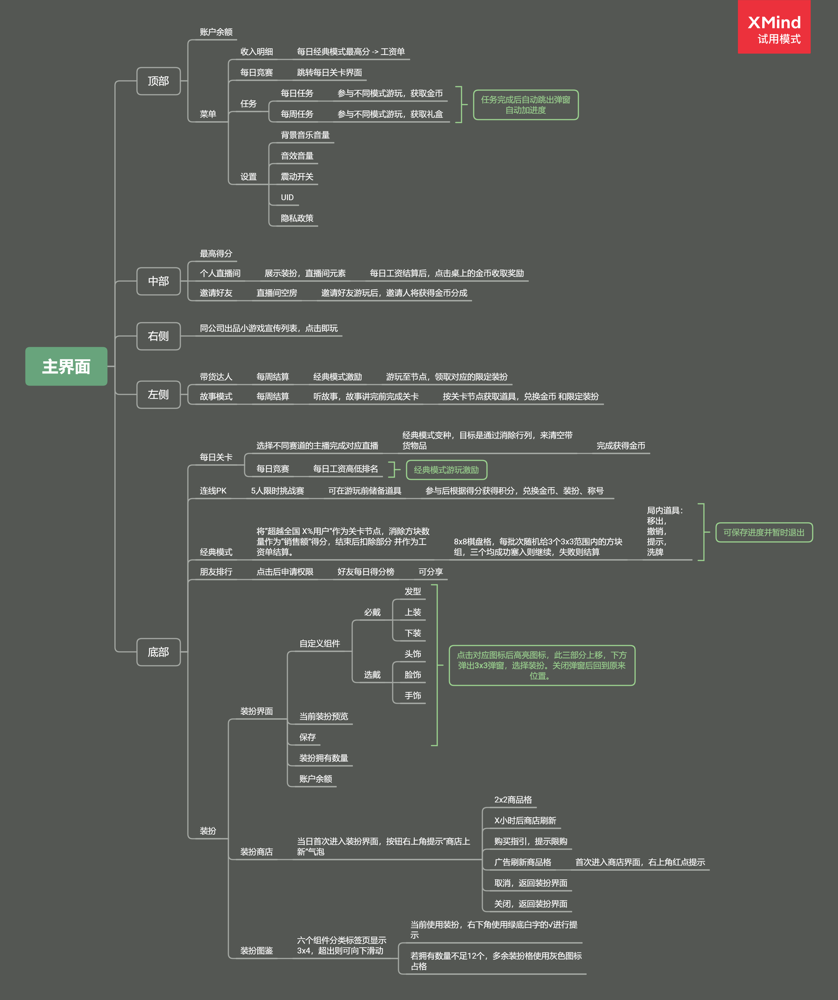

玩家为什么点击
对每个入口记录当前目标、操作、反馈和奖励，判断它出现时是否对应真实需求，例如赛前道具准备或商店商品选择。
从玩家实际看到的入口和反馈，整理玩法循环、资源关系与系统规则。
FGO 专题将笔记扩展为从者图鉴、养成循环、经济实验和好友支援原型。点击卡面，调整资源，再亲手走一遍关系建立流程。
对每个入口记录当前目标、操作、反馈和奖励，判断它出现时是否对应真实需求，例如赛前道具准备或商店商品选择。
从界面控件继续追问开放条件、资源消耗、状态变化和结果展示。将未实测价格、概率和占位参数保留为问题。
这些材料记录独立观察与研究，不代表相关游戏开发团队的内部方案。《餐厅物语》部分内容引用公开资料和历史机制；文档中的效果推论不作为已验证的经营数据。
